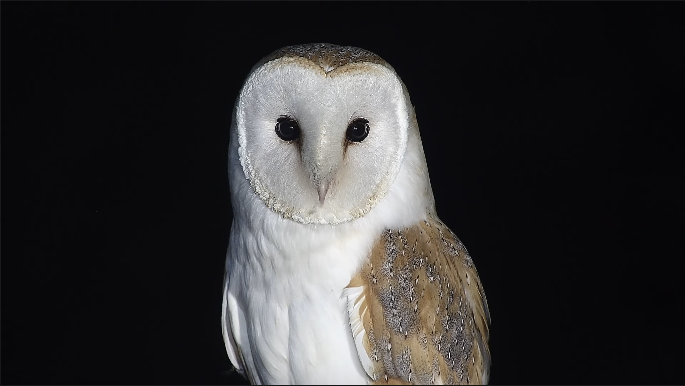
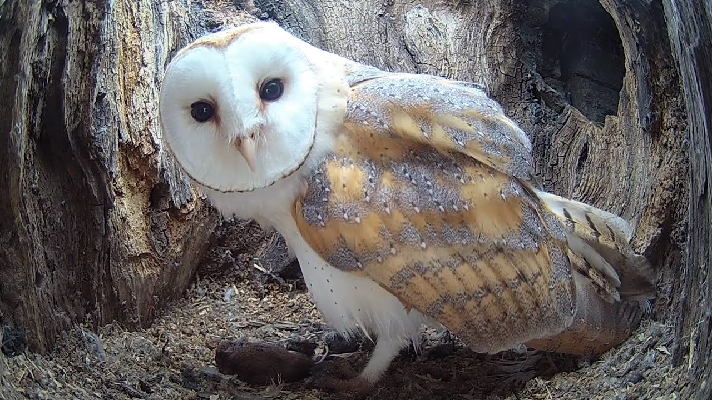
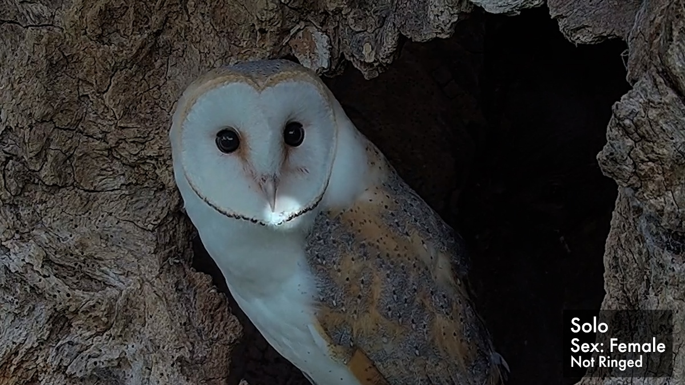
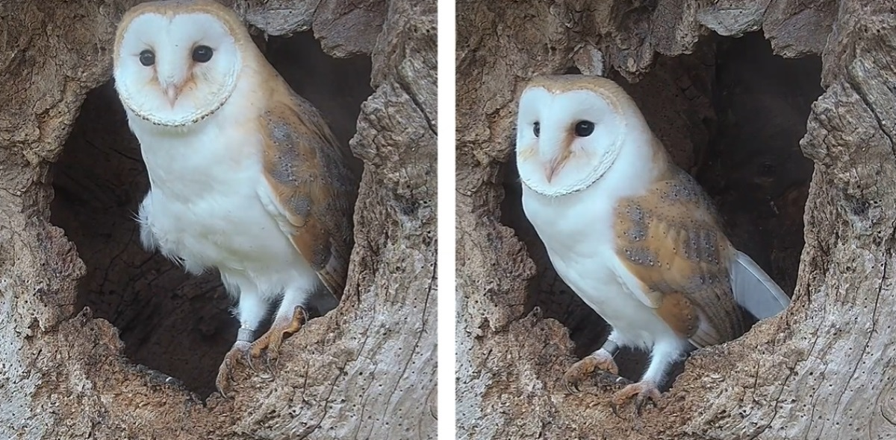

Gylfie & Finn raised 3 chicks in this nest this year: Freya, Griffin, and Fern. (above)
This is Finn, below. Tragically he drowned in a water trough for livestock.
The same pair raised 2 chicks: Nutmeg and Thyme. Also above. Gylfie is pictured below.
Gylfie had a different partner before Finn. With Barney she had 2 broods in 2020.
The 1st brood's only survivor, Solo (above)
The 2nd brood consisted of Hans and Grete. Their eldest sibling, sadly, was attacked and killed by Solo.
Below, Hans on the right & Grete on the left.
They had a clutch of 4, but only 3 hatched.
Barney lost his 1st mate in 2017 and partnered with Gylfie. They had 3 chicks in 2018.
Barney and his first mate raised 4 chicks here. They also raised 4 foster chicks, two of which are Finn and Hilda.
Hilda is sometimes seen in Ashwood, and Finn is Gylfie's 2nd partner. Barney is pictured below.